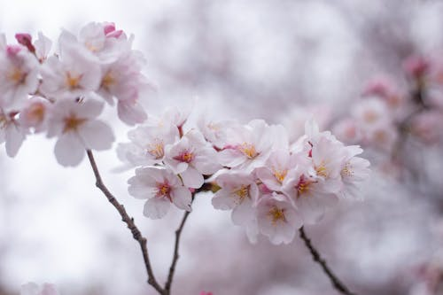

MAGNÓLIA

O que é?
A Magnólia é uma das plantas mais antigas da Terra, com fósseis que datam de milhões de anos. Suas flores são grandes, em formato de taça ou estrela, e exalam um perfume cítrico e doce. Elas simbolizam a dignidade, a perseverança e a nobreza, sendo famosas por florescerem em galhos nus antes mesmo das folhas surgirem.
Como cuidar?
A magnólia é uma árvore de vida longa que precisa de espaço e carinho:
- Luz: Preferem sol pleno ou meia-sombra. Em locais de sol muito forte, o ideal é que recebam luz filtrada nas horas mais quentes.
- Solo: Necessitam de solo profundo, rico em matéria orgânica e levemente ácido. Elas têm raízes sensíveis que não gostam de ser perturbadas.
- Rega: Quando jovens, as regas devem ser frequentes. Depois de estabelecidas, tornam-se moderadamente resistentes à seca.
- Espaço: Como podem se tornar árvores de grande porte, precisam de um local amplo para que suas raízes e copa se desenvolvam livremente.
Curiosidades
- Sobreviventes: Por serem tão antigas, as magnólias evoluíram para serem polinizadas por besouros, já que surgiram antes das abelhas.
- Resistência: Suas pétalas são incomumente duras e resistentes para evitar danos causados pelos besouros polinizadores.
- Símbolo Regional: É a flor oficial do estado do Mississippi e da Louisiana, nos Estados Unidos.
- Uso Medicinal: Na medicina tradicional chinesa, a casca da magnólia é utilizada há séculos para tratar ansiedade e problemas digestivos.